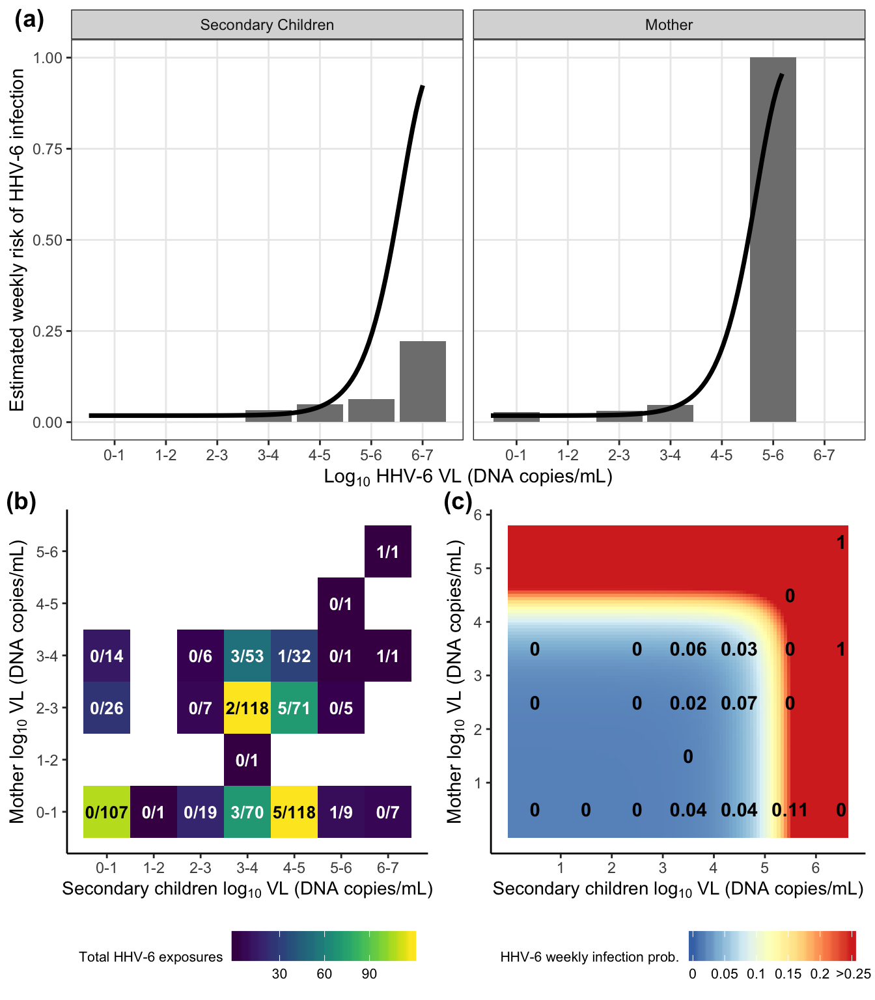
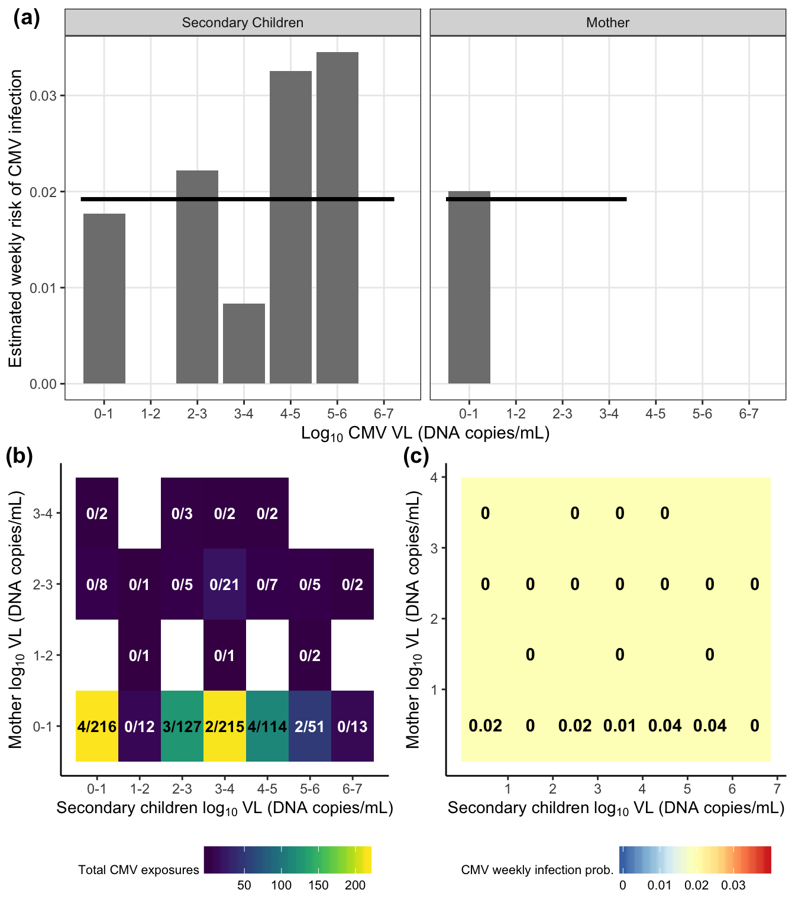

Last updated: 2020-02-01
Checks: 7 0
Knit directory: HHVtransmission/
This reproducible R Markdown analysis was created with workflowr (version 1.4.0). The Checks tab describes the reproducibility checks that were applied when the results were created. The Past versions tab lists the development history.
Great! Since the R Markdown file has been committed to the Git repository, you know the exact version of the code that produced these results.
Great job! The global environment was empty. Objects defined in the global environment can affect the analysis in your R Markdown file in unknown ways. For reproduciblity it’s best to always run the code in an empty environment.
The command set.seed(20190318) was run prior to running the code in the R Markdown file. Setting a seed ensures that any results that rely on randomness, e.g. subsampling or permutations, are reproducible.
Great job! Recording the operating system, R version, and package versions is critical for reproducibility.
Nice! There were no cached chunks for this analysis, so you can be confident that you successfully produced the results during this run.
Great job! Using relative paths to the files within your workflowr project makes it easier to run your code on other machines.
Great! You are using Git for version control. Tracking code development and connecting the code version to the results is critical for reproducibility. The version displayed above was the version of the Git repository at the time these results were generated.
Note that you need to be careful to ensure that all relevant files for the analysis have been committed to Git prior to generating the results (you can use wflow_publish or wflow_git_commit). workflowr only checks the R Markdown file, but you know if there are other scripts or data files that it depends on. Below is the status of the Git repository when the results were generated:
Ignored files:
Ignored: .DS_Store
Ignored: .Rhistory
Ignored: .Rproj.user/
Ignored: analysis/.DS_Store
Ignored: analysis/.Rhistory
Ignored: data/.DS_Store
Ignored: docs/.DS_Store
Ignored: docs/figure/.DS_Store
Ignored: output/.DS_Store
Ignored: output/preprocess-model-data/.DS_Store
Untracked files:
Untracked: data/tmp/
Unstaged changes:
Modified: code/publish_all.R
Note that any generated files, e.g. HTML, png, CSS, etc., are not included in this status report because it is ok for generated content to have uncommitted changes.
These are the previous versions of the R Markdown and HTML files. If you’ve configured a remote Git repository (see ?wflow_git_remote), click on the hyperlinks in the table below to view them.
| File | Version | Author | Date | Message |
|---|---|---|---|---|
| html | a1d2e7b | Bryan | 2020-01-24 | update with documentation |
| Rmd | af2a4c1 | Bryan | 2019-12-30 | all updates after co-author review; edits to tables/figs; ID75 |
| html | af2a4c1 | Bryan | 2019-12-30 | all updates after co-author review; edits to tables/figs; ID75 |
| Rmd | 1ed26ae | Bryan | 2019-11-20 | transmission risk rmd between sensitivity and update |
| Rmd | 8f822dd | Bryan Mayer | 2019-07-26 | mid code update with sensitivity analysis |
| html | 8f822dd | Bryan Mayer | 2019-07-26 | mid code update with sensitivity analysis |
| Rmd | ce0f229 | Bryan Mayer | 2019-07-09 | analysis through first-final draft |
| html | ce0f229 | Bryan Mayer | 2019-07-09 | analysis through first-final draft |
| Rmd | 91ba870 | Bryan Mayer | 2019-07-09 | finished transmission risk |
| html | 91ba870 | Bryan Mayer | 2019-07-09 | finished transmission risk |
| Rmd | b8fb749 | Bryan Mayer | 2019-06-07 | first go at transmission risk |
| html | b8fb749 | Bryan Mayer | 2019-06-07 | first go at transmission risk |
This is the main analysis and results for the manuscript. For pre-processing of the model data and a brief background on the model, see transmission model data setup and background. For full model fitting and sensitivity analysis, see the analysis of model fitting and sensitivity analysis. The sensitivity analysis had downstream effects on the final model analysis presented here.
library(tidyverse)
library(conflicted)
library(kableExtra)
library(cowplot)
library(scales)
library(lhs)
source("code/processing_functions.R")
conflict_prefer("filter", "dplyr")
theme_set(
theme_bw() +
theme(panel.grid.minor = element_blank(),
legend.position = "top")
)
load("output/preprocess-model-data/model_data.RData")
final_model = read_rds("output/final-model/final_model.rds")
# function calculate IDX (e.g., X (prob) = 50 for ID50)
IDX_calc = function(b0, bE, prob){
(-log(1-prob) - b0)/(bE)
}options(knitr.kable.NA = '')
exposure_summary = model_data_long %>%
group_by(virus, idpar) %>%
summarize(
mean_exposure = 10^mean(count[count > 0]),
mean_exposure2 = 10^mean(count),
max_exposure = max(exposure)
) %>%
mutate(parameter = paste0("b", idpar)) %>%
ungroup()
combined_wide = final_model %>%
subset(model == "Combined") %>%
pivot_wider(names_from = idpar, values_from = betaE) %>%
rename(betaM = M, betaS = S)
final_model_tab = final_model %>%
select(virus, model, idpar, beta0, betaE, null_beta, pvalue, loglik, null_loglik) %>%
arrange(desc(virus), desc(model), idpar) %>%
gather(parameter, estimate, beta0, betaE, null_beta) %>%
select(virus, model, idpar, parameter, estimate, pvalue, null_loglik, loglik) %>%
mutate(
model_cat = case_when(
parameter == "null_beta" ~ "Constant",
model == "Combined" ~ "CM",
TRUE ~ idpar
),
loglik = if_else(parameter == "null_beta", null_loglik, loglik),
parameter = case_when(
parameter == "null_beta" ~ "b0",
parameter == "betaE" ~ str_c("b", idpar),
TRUE ~ str_remove(parameter, "eta")
),
model = factor(
model_cat,
levels = c("Constant", "S", "M", "HH", "CM"),
labels = c(
"Constant risk",
"Secondary children",
"Mother",
"Household sum",
"Combined model"
)
),
pvalue = if_else(model == "Constant risk", NA_real_, pvalue)
) %>%
ungroup() %>%
select(-model_cat, -null_loglik, -idpar) %>%
distinct()
beta0_ests = final_model_tab %>%
subset(model != "Constant risk" & parameter == "b0") %>%
select(virus, model, estimate) %>%
rename(beta0 = estimate)final_model_tab %>%
select(virus, model, parameter, estimate, loglik) %>%
arrange(desc(virus), model) %>%
write_csv("output/results-tables/supp_table4.csv") %>%
mutate_if(is.numeric, format, digits = 3) %>%
kable(digits = 3, caption = "Parameter model estimates") %>%
kable_styling(full_width = F) %>%
collapse_rows(c(1:2, 5), valign = "top")| virus | model | parameter | estimate | loglik |
|---|---|---|---|---|
| HHV-6 | Constant risk | b0 | 3.67e-02 | 91.2 |
| Secondary children | b0 | 2.10e-02 | 84.8 | |
| bS | 9.13e-07 | |||
| Mother | b0 | 2.93e-02 | 87.5 | |
| bM | 7.96e-06 | |||
| Household sum | b0 | 2.03e-02 | 84.6 | |
| bHH | 9.12e-07 | |||
| Combined model | b0 | 1.82e-02 | 84.2 | |
| bM | 6.56e-06 | |||
| bS | 8.03e-07 | |||
| CMV | Constant risk | b0 | 1.98e-02 | 74.1 |
| Secondary children | b0 | 1.94e-02 | ||
| bS | 0.00e+00 | |||
| Mother | b0 | 1.94e-02 | ||
| bM | 0.00e+00 | |||
| Household sum | b0 | 1.94e-02 | ||
| bHH | 0.00e+00 | |||
| Combined model | b0 | 1.94e-02 | ||
| bM | 1.89e-114 | |||
| bS | 0.00e+00 |
exposure_summary %>%
arrange(desc(virus), desc(idpar)) %>%
select(-mean_exposure2, -parameter) %>%
mutate_if(is.numeric, format, digits = 3, scientific = T) %>%
kable(digits = 3, caption = "Parameter model estimates") %>%
kable_styling(full_width = F) %>%
collapse_rows(c(1), valign = "top")| virus | idpar | mean_exposure | max_exposure |
|---|---|---|---|
| HHV-6 | S | 9.52e+03 | 3.18e+06 |
| M | 6.55e+02 | 4.73e+05 | |
| HH | 8.77e+03 | 3.18e+06 | |
| CMV | S | 5.27e+03 | 5.26e+06 |
| M | 3.64e+02 | 7.50e+03 | |
| HH | 5.83e+03 | 5.26e+06 |
constant_risk_res = final_model_tab %>%
subset(model == "Constant risk") %>%
mutate(
model = as.character(model),
constant_risk = 1 - exp(-estimate)
) %>%
select(virus, model, constant_risk)
final_model_tab %>%
subset(model %in% c("Mother", "Secondary children", "Household sum")) %>%
pivot_wider(names_from = parameter, values_from = c(estimate)) %>%
mutate(idpar = if_else(model == "Household sum", "HH",
substr(as.character(model), 1, 1))) %>%
left_join(exposure_summary, by = c("virus", "idpar")) %>%
mutate(
bE = if_else(model == "Household sum", bHH, pmax(bM, bS, na.rm = T)),
constant_risk = 1 - exp(-b0),
exposure_risk_mean = 1 - exp(-b0 - bE * mean_exposure),
exposure_risk_max = 1 - exp(-b0 - bE * max_exposure)
) %>%
select(virus, idpar, constant_risk, mean_exposure, exposure_risk_mean, max_exposure, exposure_risk_max, pvalue) %>%
rename(model = idpar) %>%
bind_rows(constant_risk_res) %>%
mutate_at(vars(mean_exposure, max_exposure), (function(x) round_away_0(log10(x), 2, trailing_zeros = T))) %>%
mutate_at(vars(contains("risk")), (function(x) round_away_0(100*x, 2, trailing_zeros = T))) %>%
mutate(
pvalue = clean_pvalues(pvalue, sig_alpha = 0),
model = factor(
model,
levels = c("Constant risk", "S", "M", "HH"),
labels = c("Null", "Secondary children",
"Mother",
"Household sum")
)
) %>%
arrange(desc(virus), model) %>%
write_csv("output/results-tables/individual_risk_tab.csv") %>%
kable(digits = 3, caption = "Parameter model estimates") %>%
kable_styling(full_width = F) %>%
collapse_rows(c(1), valign = "top")| virus | model | constant_risk | mean_exposure | exposure_risk_mean | max_exposure | exposure_risk_max | pvalue |
|---|---|---|---|---|---|---|---|
| HHV-6 | Null | 3.60 | — | ||||
| Secondary children | 2.07 | 3.98 | 2.92 | 6.50 | 94.66 | <0.001 | |
| Mother | 2.88 | 2.82 | 3.39 | 5.68 | 97.75 | 0.007 | |
| Household sum | 2.01 | 3.94 | 2.79 | 6.50 | 94.63 | <0.001 | |
| CMV | Null | 1.96 | — | ||||
| Secondary children | 1.92 | 3.72 | 1.92 | 6.72 | 1.92 | 0.939 | |
| Mother | 1.92 | 2.56 | 1.92 | 3.88 | 1.92 | 0.939 | |
| Household sum | 1.92 | 3.77 | 1.92 | 6.72 | 1.92 | 0.939 |
final_model_tab %>%
subset(model %in% c("Combined model")) %>%
mutate(idpar = substr(parameter, 2, 2)) %>%
select(-parameter) %>%
left_join(exposure_summary, by = c("virus", "idpar")) %>%
group_by(virus, pvalue, idpar) %>%
summarize(
risk_comp_mean = if_else(idpar == "0", estimate, estimate * mean_exposure),
risk_comp_max = if_else(idpar == "0", estimate, estimate * max_exposure)
) %>%
ungroup() %>%
pivot_wider(names_from = idpar, values_from = c(risk_comp_mean, risk_comp_max)) %>%
mutate(
constant_risk = 1 - exp(-risk_comp_mean_0)
) %>%
pivot_longer(cols = c(risk_comp_mean_M, risk_comp_mean_S,
risk_comp_max_M, risk_comp_max_S)) %>%
mutate(
risk = 1 - exp(-risk_comp_mean_0 - value),
parm = str_remove_all(name, "risk_comp_"),
pvalue = clean_pvalues(pvalue, sig_alpha = 0)
) %>%
select(-name, -contains("risk_comp"), -value) %>%
spread(parm, risk) %>%
mutate_if(is.numeric, (function(x) round_away_0(100*x, 2, trailing_zeros = T))) %>%
select(virus, constant_risk, mean_S, max_S, mean_M, max_M, pvalue) %>%
arrange(desc(virus)) %>%
write_csv("output/results-tables/combined_risk_tab.csv") %>%
kable(digits = 3, caption = "Parameter risk estimates (combined model)") %>%
kable_styling(full_width = F) %>%
collapse_rows(c(1), valign = "top")| virus | constant_risk | mean_S | max_S | mean_M | max_M | pvalue |
|---|---|---|---|---|---|---|
| HHV-6 | 1.80 | 2.55 | 92.39 | 2.22 | 95.58 | <0.001 |
| CMV | 1.92 | 1.92 | 1.92 | 1.92 | 1.92 | 0.997 |
final_model_tab %>%
subset(parameter != "b0" & model != "Household sum" & virus == "HHV-6") %>%
select(-pvalue, -loglik) %>%
group_by(virus, model) %>%
left_join(beta0_ests, by = c("virus", "model")) %>%
mutate(
exposure_source = factor(case_when(
parameter == "bS" ~ "Secondary Children",
parameter == "bM" ~ "Mother"
), levels = c("Secondary Children", "Mother")),
ID25 = IDX_calc(beta0, estimate, 0.25),
ID50 = IDX_calc(beta0, estimate, 0.5),
ID75 = IDX_calc(beta0, estimate, 0.75)
) %>%
ungroup() %>%
mutate_if(is.numeric, (function(x) round_away_0(log10(x), 2, trailing_zeros = T))) %>%
arrange(model, exposure_source) %>%
write_csv("output/results-tables/hhv6_id50_tab.csv") %>%
select(-virus, -estimate, -beta0, -parameter) %>%
kable(digits = 2) %>%
kable_styling(full_width = F) %>%
collapse_rows(1:2, valign = "top") %>%
add_header_above(c(" " = 2, "HHV-6 Infectious dose (ID)" = 3))| model | exposure_source | ID25 | ID50 | ID75 |
|---|---|---|---|---|
| Secondary children | Secondary Children | 5.47 | 5.87 | 6.17 |
| Mother | Mother | 4.51 | 4.92 | 5.23 |
| Combined model | Secondary Children | 5.53 | 5.92 | 6.23 |
| Mother | 4.61 | 5.01 | 5.32 |
risk_data = model_data_long %>%
subset(idpar != "HH") %>%
mutate(
exposure_cat = floor(count) + 0.5
) %>%
group_by(idpar, virus, exposure_cat) %>%
summarize(
total_exposures = n(),
total_infected = sum(infectious_1wk),
risk = mean(infectious_1wk)
)
risk_grid = model_data %>%
mutate(
exposure_S = floor(S) + 0.5,
exposure_M = floor(M) + 0.5
) %>%
group_by(virus, exposure_S, exposure_M) %>%
summarize(
total_exposures = n(),
total_infected = sum(infectious_1wk),
risk = mean(infectious_1wk)
)
risk_prediction_both = final_model %>%
subset(model == "Combined") %>%
left_join(exposure_summary, by = c("virus", "idpar")) %>%
ungroup() %>%
mutate(idpar = factor(idpar, levels = c("S", "M"))) %>%
group_by(virus, idpar) %>%
nest() %>%
mutate(
pred_res = map(data, ~with(.x, tibble(
exposure = seq(0, log10(max_exposure), length = 100),
risk = 1 - exp(-beta0 - betaE * 10^exposure)
)))
) %>%
unnest(pred_res)
dr_plots = map(c("HHV-6", "CMV"), function(i){
if(i == "CMV") {
xlab = expression(paste("Log"[10], " CMV VL (DNA copies/mL)"))
ybreaks = pretty_breaks()
}
if(i == "HHV-6") {
xlab = expression(paste("Log"[10], " HHV-6 VL (DNA copies/mL)"))
ybreaks = 0:4/4
}
risk_data %>%
subset(virus == i) %>%
ungroup() %>%
mutate(idpar = factor(idpar, levels = c("S", "M"))) %>%
ggplot(aes(x = exposure_cat, y = risk)) +
geom_bar(stat = "identity", fill = "grey50") +
geom_line(data = subset(risk_prediction_both, virus == i),
aes(x = exposure), size = 1.25) +
scale_y_continuous(paste("Estimated weekly risk of", i, "infection"),
breaks = ybreaks) +
scale_x_continuous(xlab,
breaks = 0:6+0.5,
labels = paste(0:6, 1:7, sep = "-")) +
facet_grid(.~idpar, labeller = as_labeller(c('S' = "Secondary Children", 'M' = "Mother"))) +
theme(legend.position = "top")
})
exposure_heats = map(c("HHV-6", "CMV"), function(i){
risk_grid %>%
subset(virus == i) %>%
ggplot(aes(x = exposure_S, y = exposure_M, fill = total_exposures,
label = paste(total_infected, total_exposures, sep = "/"))) +
geom_tile() +
#geom_label(label.padding = unit(0.1, "lines"), label.size = 0, fill = "white") +
geom_text(aes(colour = factor(total_exposures > 100)),
fontface = "bold", size = 3.5) +
scale_color_manual(guide=F, values = c("white", "black")) +
viridis::scale_fill_viridis(paste("Total", i, "exposures"), option = "viridis") +
scale_y_continuous(expression(paste("Mother log"[10], " VL (DNA copies/mL)")),
breaks = 0:6+0.5,
labels = paste(0:6, 1:7, sep = "-")) +
scale_x_continuous(expression(paste("Secondary children log"[10], " VL (DNA copies/mL)")),
breaks = 0:6+0.5,
labels = paste(0:6, 1:7, sep = "-")) +
theme_classic() +
theme(legend.position = "bottom",
axis.title.x = element_text(size = 10.5),
legend.title = element_text(size = 8),
legend.text = element_text(size = 8),
legend.key.width = unit(0.75, "cm"))
})
risk_heats = map(c("HHV-6", "CMV"), function(i){
if(i == "CMV") {
kbreaks = pretty_breaks()
klabels = function(x)identity(x)
}
if(i == "HHV-6") {
klabels = c(0:4/20, " >0.25")
kbreaks = c(0:5/20)
}
crossing(
virus = i,
exposure_S = seq(0,
log10(subset(exposure_summary, virus == i & idpar == "S")$max_exposure)+0.1,
length = 100),
exposure_M = seq(0,
log10(subset(exposure_summary, virus == i & idpar == "M")$max_exposure)+0.1,
length = 100)
) %>%
left_join(combined_wide, by = "virus") %>%
mutate(
risk = 1 - exp(-beta0 - betaS * 10^exposure_S - betaM * 10^exposure_M)
) %>%
ggplot(aes(x = exposure_S, y = exposure_M, fill = pmin(risk, 0.25))) +
geom_tile() +
scale_y_continuous(expression(paste("Mother log"[10], " VL (DNA copies/mL)")),
breaks = 1:7) +
scale_x_continuous(expression(paste("Secondary children log"[10], " VL (DNA copies/mL)")),
breaks = 1:7) +
scale_fill_distiller(paste(i, "weekly infection prob."),
palette = "RdYlBu", breaks= kbreaks,
labels = klabels) +
geom_text(data = subset(risk_grid, virus == i), aes(label = round(risk, 2)),
fontface = "bold", colour = "black") +
theme_classic() +
theme(legend.position = "bottom",
axis.title.x = element_text(size = 10.5),
legend.title = element_text(size = 8),
legend.text = element_text(size = 8),
legend.key.width = unit(0.68, "cm"))
})plot_grid(dr_plots[[1]],
plot_grid(exposure_heats[[1]], risk_heats[[1]], nrow = 1, labels = c("(b)", "(c)"),
hjust = -0.2, vjust = 0.5),
nrow = 2, labels = "(a)")
| Version | Author | Date |
|---|---|---|
| af2a4c1 | Bryan | 2019-12-30 |
plot_grid(dr_plots[[2]],
plot_grid(exposure_heats[[2]], risk_heats[[2]], nrow = 1, labels = c("(b)", "(c)"),
hjust = -0.2, vjust = 0.5),
nrow = 2, labels = "(a)")
| Version | Author | Date |
|---|---|---|
| af2a4c1 | Bryan | 2019-12-30 |
sessionInfo()R version 3.6.1 (2019-07-05)
Platform: x86_64-apple-darwin15.6.0 (64-bit)
Running under: macOS Catalina 10.15.2
Matrix products: default
BLAS: /Library/Frameworks/R.framework/Versions/3.6/Resources/lib/libRblas.0.dylib
LAPACK: /Library/Frameworks/R.framework/Versions/3.6/Resources/lib/libRlapack.dylib
locale:
[1] en_US.UTF-8/en_US.UTF-8/en_US.UTF-8/C/en_US.UTF-8/en_US.UTF-8
attached base packages:
[1] stats graphics grDevices utils datasets methods base
other attached packages:
[1] lhs_1.0.1 scales_1.1.0 cowplot_1.0.0 kableExtra_1.1.0
[5] conflicted_1.0.4 forcats_0.4.0 stringr_1.4.0 dplyr_0.8.3
[9] purrr_0.3.3 readr_1.3.1 tidyr_1.0.0 tibble_2.1.3
[13] ggplot2_3.2.1 tidyverse_1.3.0
loaded via a namespace (and not attached):
[1] Rcpp_1.0.3 lubridate_1.7.4 lattice_0.20-38
[4] assertthat_0.2.1 rprojroot_1.3-2 digest_0.6.23
[7] plyr_1.8.4 R6_2.4.1 cellranger_1.1.0
[10] backports_1.1.5 reprex_0.3.0 evaluate_0.14
[13] httr_1.4.1 highr_0.8 pillar_1.4.2
[16] rlang_0.4.2 lazyeval_0.2.2 readxl_1.3.1
[19] rstudioapi_0.10 whisker_0.4 rmarkdown_1.17
[22] labeling_0.3 webshot_0.5.1 selectr_0.4-1
[25] munsell_0.5.0 broom_0.5.2 compiler_3.6.1
[28] modelr_0.1.5 xfun_0.10 pkgconfig_2.0.3
[31] htmltools_0.4.0 tidyselect_0.2.5 gridExtra_2.3
[34] workflowr_1.4.0 viridisLite_0.3.0 crayon_1.3.4
[37] dbplyr_1.4.2 withr_2.1.2 grid_3.6.1
[40] nlme_3.1-142 jsonlite_1.6 gtable_0.3.0
[43] lifecycle_0.1.0 DBI_1.0.0 git2r_0.26.1
[46] magrittr_1.5 cli_1.1.0 stringi_1.4.3
[49] reshape2_1.4.3 farver_2.0.1 viridis_0.5.1
[52] fs_1.3.1 xml2_1.2.2 ellipsis_0.3.0
[55] generics_0.0.2 vctrs_0.2.2 RColorBrewer_1.1-2
[58] tools_3.6.1 glue_1.3.1 hms_0.5.3
[61] yaml_2.2.0 colorspace_1.4-1 rvest_0.3.5
[64] memoise_1.1.0 knitr_1.25 haven_2.2.0 {kind=link}
{kind=link}
{kind=link}
{kind=link}
{kind=link}
{kind=link}
{kind=link}